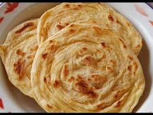

Resep Kue Maryam

Bahan-bahan:
- 250 gram tepung terigu
- 1 butir telur
- 3 sdm margarin
- 100 ml air hangat
- 2 sdm susu bubuk
- 1/2 sdt garam
- margarin leleh
- minyak untuk merendam
Langkah-langkah
- Campur semua bahan roti jadi satu
- Uleni sampai kalis jangan takut jika adonan lengket, lumuri tangan sesekali dengan tepung, uleni terus sampai adonan kalis
- Kalisnya adonan canai sekalis adonan roti, kira kira sperti ini sudah cukup